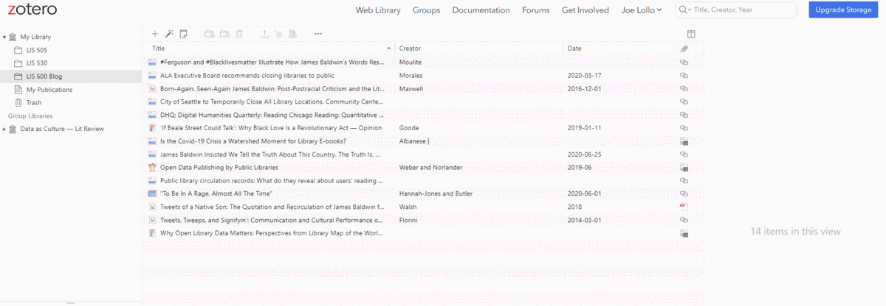
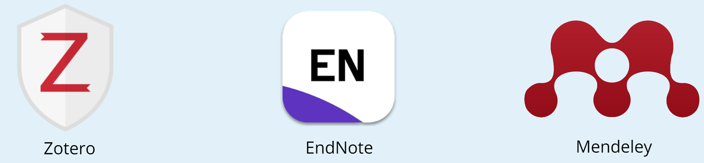
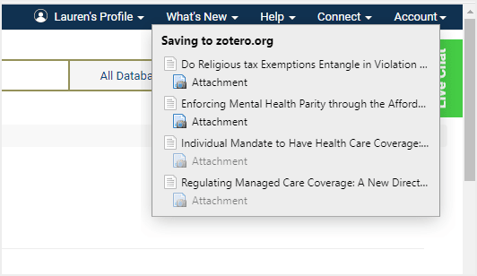
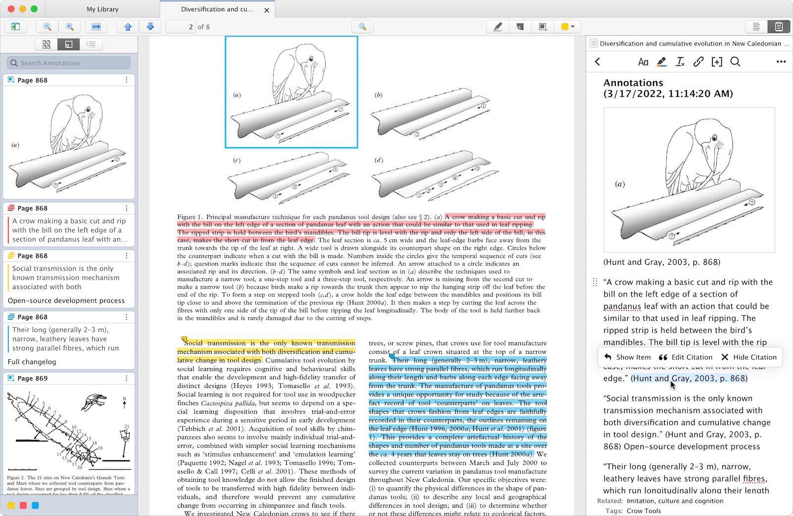
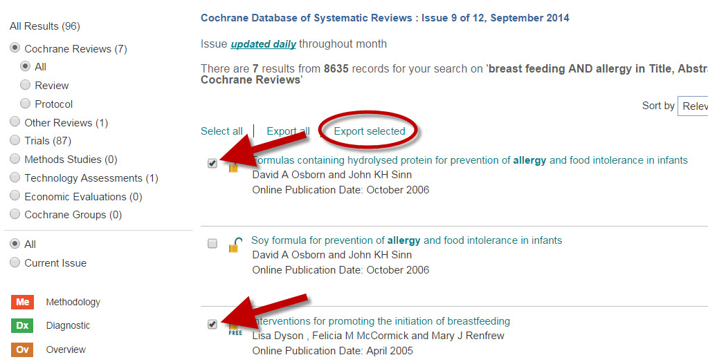

Follow Along:
My Website (features these slides!)
Reveal.js, the software I used to make this presentation, where you can make your own!
Citation Management Systems
A citation management system is a tool that:
- Helps researchers keep track of the sources they find.
- Stores and organizes research citations and documents.
- Usually facilitates collaboration and source-sharing among researchers.
Instead of going back and searching for references, you can keep track of them while you are researching!

Free at UW!
Through the UW Libraries, students have free access to the following citation management tools:

Each of these tools has varying strengths and weaknesses depending on your research needs!
Zotero
Zotero is interesting because it is available in desktop AND web formats,
and can connect to both Google Docs and Microsoft Word. It is a good general purpose citation tool across disciplines.
Zotero users have unlimited free citations, with a storage of up to 300 MB.
When you come across a source that seems interesting on the Internet, you can save to the Zotero app
using its browser widget, shown below:

The desktop version of Zotero also allows you to annotate PDFs saved onto the application,
which is useful if you don't want to download too many PDFs on your computer.

EndNote
Through UW, you have access to EndNote Basic, an online-only citation management tool that is often used
in medicine and natural science disciplines.
The Health Sciences Library has its own EndNote guide, which
goes in more depth.
EndNote lets users register library databases to their accounts and export files from the
library websites themselves, as this example from the University of Alabama shows.

EndNote's main downside is that UW students only have the Basic version, which costs less to the Libraries and has
less features than the Premium version, which also has desktop capabilities.
Despite this, UW's EndNote access is strongly recommended for students and researchers in both the School of Medicine
and School of Public Health.
Mendeley
Mendeley is the only one of these tools that is not available in online formats, being a downloadable
desktop application.
Mendeley has the highest storage capacity across all three of these applications, with unlimited storage of up to 2 GB.
In Conclusion:
Choosing a citation management tool depends on your own preferences and work style. It is a good idea to talk to other researchers to see if a particular citation tool is commonly used by your discipline.
Here's a good comparison of them in the next slide, using information presented here.